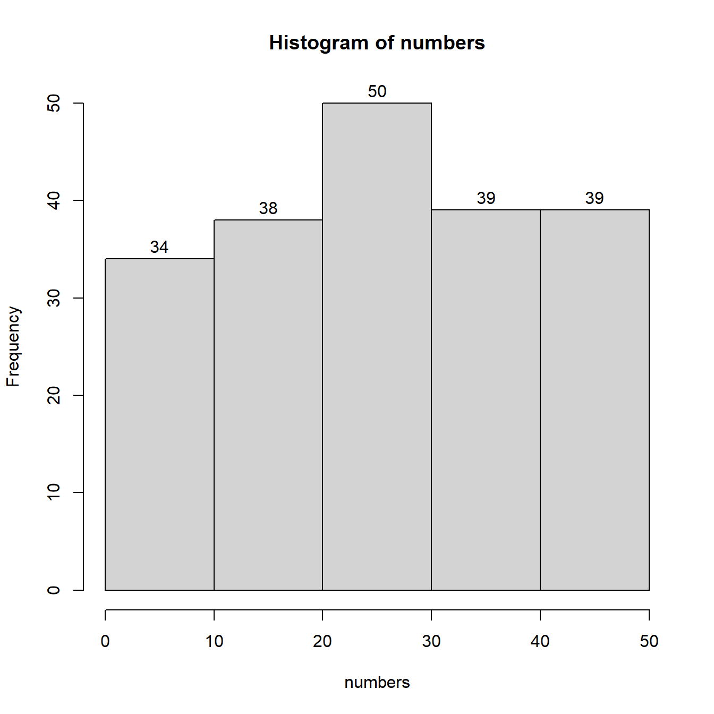

Chapter3 Using Vectors and Functions
3.1 Learning Objectives
In this session we be introducing the concepts of R-objects, ** and functions. These are two elements of R that will prove to be very useful in your day to day practice.
We will also start working on some basic concepts of statistical exploration of data. One of the first steps we take as Psychologists when we want to analyse our data, is first to get a “feel”, or gist if you want, of how are data are distributed.
By the end of this Lab session you should have a clear understanding of the following concepts:
- R-objects such as Vectors, Lists, Matrices, Dataframes etc
- Functions and Arguments
- Creating Random Data for Practice Purposes
- Grouping Data using R
- Creating Frequency Tables using R
- Creating a basic Histogram using R
3.2 R-objects: Vectors
Let us assume that we asked 15 participants to report their age. One way to record this in R would be to use one variable per participant. It would look something like the following (DO NOT TYPE THE FOLLOWING IN RSTUDIO!!)
age1 <- 18
age2 <- 20
age3 <- 35
# and so on all the way down until we reach
age15 <- 32As you can see this would take 15 variables. Not only it would look horrible but also it would be a very wasteful way to store our information.
For cases where we want to store multiple observations single value variables are not the best way forward. Actually they are the worst way forward. Instead we can use a variable that can store many different values at once, using a vector. The following is an example of a vector that stores our participants 15 ages. Please do type the following in your R script and do run each line to see the output. You should name your R script “session2”.
# We are creating a vector c and we are populating it with 15 values
# Then we assign it to a variable called Age
Age <- c(18, 18, 20, 32, 45, 33, 19, 19, 20, 58, 63, 21, 19, 19, 18)
# If we call the variable Age we will get all 15 values
Age[1] 18 18 20 32 45 33 19 19 20 58 63 21 19 19 18
# But we can also access any of the 15 entries we want by calling its "location"
Age[7][1] 19
Note we always use c() to create a vector. We should note here that a vector can only hold one type of information (e.g., numeric)
The same way we did calculations with simple value variables we can also do with vectors. For example, we may have a vector or prices for products and we may want to double the price of all of the products at once:
# We are creating a vector c and we are populating it with 5 prices.
# The prices could be in £ or any other currency (we only type the value in).
# Then we assign our vector to a variable called Prices.
Prices <- c(115, 120, 200, 300, 500)
# call Price to see the values in the console
Prices[1] 115 120 200 300 500
# We now want a new variable that will include the old prices doubled.
# We can call the new variable anything we want, let us call it Newprices
Newprices <- 2*Prices
# call Price to see the values in the console
Newprices[1] 230 240 400 600 1000
You see how powerful and handy vectors can be as they allow us to work with many values as once. We will be using vectors a lot in our work.
3.3 R-objects: Lists
As mentioned above a vector is restricted to only include entries of one type of information. If we want to store different types of information we can use a list.
Shopping <- list(c("butter", "milk", "eggs"), 50, "Monday", "Coffee", TRUE)
Shopping[[1]] [1] “butter” “milk” “eggs”
[[2]] [1] 50
[[3]] [1] “Monday”
[[4]] [1] “Coffee”
[[5]] [1] TRUE
Shopping[[4]][1] “Coffee”
Even though we will not be creating many lists ourselves, we will be seeing many lists. This is because many statistical analysis functions generate different pieces of information that is stored in a list and we can call when we need. As a example thing of a 3x2 ANOVA. The output will include the anova values, the assumption checks, the sphericity check and corrections and so on. All that will be stored in a list.
3.4 R-objects: Dataframes
A dataframe is a two-dimensional version of a list. This will appear to be the most intuitive structure for us Psychologists as it resembles the most how we usually see our data. That is, observations per row and each column can have its own name. This means that each column is restricted to one type of data.
work <- data.frame(participant = c("1001", "1002", "1003", "1004"),
gender = c("female", "male", "female", "other"), strikesupport = c("yes", "no", "yes","no"))
workparticipant gender strikesupport 1 1001 female yes 2 1002 male no 3 1003 female yes 4 1004 other no
work$participant[1] “1001” “1002” “1003” “1004”
work$participant[2][1] “1002”
work[2]gender 1 female 2 male 3 female 4 other
3.5 R-objects: Factors
Factor is special R object for storing categorical data. This is very similar to how we regard factors in Psychology, where we have different levels. We can either create a factor variable or we can define an existing variable as a factor.
gender <- factor(c("female", "male", "other", "female"))
gender[1] female male other female Levels: female male other
attributes(gender)$levels [1] “female” “male” “other”
$class [1] “factor”
In the next session we will see two ways to create to change an existing variable to factor.
You can get more information on R-objects including matrices and arrays here: https://rstudio-education.github.io/hopr/r-objects.html
3.6 Exercise 2.1
Create a dataframe that will have four columns and three rows. You can call your columns any name you want and the data can be of any type of your choice. Once you are done write the right code in order to see the contents of your third column. Furthermore, write the right code to see the element that is on the first column and second row.
3.7 Creating vectors with random numbers
As we do not have any real data yet, we might want to practice out learning with some made up data sets. That is absolutely fine but it poses a problem. If we want to create a vector with 200 made up values it will take us quite a while to actually type 200 values. Luckily, there is a solution to that. We can use an R function to create these numbers automatically. Let us see this in practice with a small example.
# I am using a R function called sample.int()
# This function creates random integer numbers
numbers <- sample.int(10, 5, replace = TRUE)
numbers[1] 8 9 4 3 5
As mentioned above, I used a function called sample.int(). A function in R, is a mechanism that can perform a task. In this case our function can select an integer number randomly. A function also includes two brackets (). Within these brackets we can specify our own arguments in order to be clear what we want R to do for us when this function is used.
Notice the number 10, this argument instructs our function that we want to pick randomly a number between 1 and 10.
Notice the second number 5, this argument instructs our function to give 5 such numbers from 1 to 10.
Notice the replace = TRUE part, this is another argument instructing R that numbers could be repeated. In other words, we can see the same number appearing more than once.
3.8 Frequency tables in R and Histograms
Let us now proceed to a larger data set comprised of 200 random integers between 1 and 50. We will organise that data in 5 groups and produce a grouped frequency table. Then lastly, we will create a histogram with the same 5 groups.
# Similarly as above, I will call sample.int()
# But this time I need 200 numbers between 1 and 50.
# See how my arguments have now changed.
numbers <- sample.int(50, 200, replace = TRUE)
numbers[1] 14 33 41 39 30 23 17 14 22 36 4 6 29 18 39 6 23 12 21 16 33 19 2 30 40 [26] 24 29 36 1 29 26 50 13 3 38 29 14 47 10 2 30 23 29 7 24 21 43 19 35 41 [51] 19 28 13 16 1 39 17 48 31 50 2 38 26 9 8 41 24 24 39 39 48 16 46 34 38 [76] 25 36 21 33 37 42 33 30 41 39 14 42 12 30 50 22 10 8 32 14 26 3 42 48 13 [101] 48 15 26 20 41 6 18 27 38 36 34 17 29 35 45 17 36 12 23 22 8 19 29 1 1 [126] 49 25 31 20 32 50 10 10 26 16 3 48 42 4 17 46 44 33 1 5 38 29 1 28 3 [151] 31 9 29 23 17 30 28 49 34 12 43 14 6 40 9 23 26 47 46 48 34 9 22 50 50 [176] 31 31 49 26 50 14 25 30 36 17 29 2 48 4 28 19 20 38 45 44 45 18 29 11 41
# Now we will call a new function to help us group our data.
# First put them in 5 groups. The numbers in c() declare the numbers that define each group.
groups <- cut(numbers, breaks = c(0,10,20,30,40,50), right = TRUE)
# Now I can produce my frequency table using another function
summary(groups)(0,10] (10,20] (20,30] (30,40] (40,50] 34 38 50 39 39
# We will now use a new function called hist that creates histograms.
# Note that this function has to work with the original numbers
# and not with the groups.
hist(numbers, breaks = 5, labels = TRUE)
Let’s discuss the functions we used:
sample.init() creates a sample of integer numbers
cut() cuts our sample in smaller pieces. For arguments we had to provide our original sample (numbers). We then specified at what numbers we wanted the breaks to be (c(0,10,20,30,40,50)). Finally, we wanted the numbers on the right end of each group to be included in the count.
summary() prints out the group frequency table, we only need one argument here, the variable that contains the grouped data (groups).
hist() creates a histogram from our original sample (not the grouped one!!!). The arguments here were our sample (numbers), how many breaks we wanted (breaks = 5), and we wanted each bar to have its frequency at the top (labels = TRUE). As you can see we can define how many groups we want when we ask for our histogram. So when all we want is a histogram, then the cut() and summary() steps can be omitted. The histogram will do that behind the scenes and show us the frequencies in the graph. Try it out on your own by changing the number of breaks in the histogram.
Notice each time your run your code you will get a different frequency distribution and a different histogram. This is because we create these 200 numbers randomly and each time we are getting a new set.
3.9 Exercise 2.2
Create a random set of 200 integers between 1 and 40. Group that data in 8 groups and produce the grouped frequency table. Then produce a histogram using these 8 groups. Spend some time to experiments with the number of bars in the histogram as well as generating new random numbers. This will allow you to become more confident with the use of arguments in functions.